Karvinen 2023: Configuration Management of Distributed Systems over Unreliable and Hostile Networks
Luku 4.12.1 – Size and Complexity of Some DSLs
Oma huomio: Kaikkien toimintojen opettelu ei ole tarpeellista, sillä tavallisessa palvelinhallinnassa käytetään usein vain pientä osaa ominaisuuksista.
Luku 4.12.2 – Use of DSL Functions in Case Configuration
Oma huomio: Tämä näkyi myös omassa työssäni, sillä Redis-palvelimen automatisointi onnistui muutamalla Ansible-moduulilla.
Luku 4.12.3.1 – Dependencies Between Main Functions
Oma huomio: Ansible-handlerin käyttäminen Redis-palvelun uudelleenkäynnistämiseen oli hyvä esimerkki tästä toimintatavasta.
Tässä tehtävässä asensin Debian 13 -virtuaalikoneelle Redis-palvelimen. Redis on avoimen lähdekoodin tietovarasto, joka säilyttää tietoa avain-arvo-pareina. Sitä voidaan käyttää esimerkiksi välimuistina ja sovellusten tietojen tallentamiseen.
Aloitin päivittämällä paketinhallinnan tiedot ja asentamalla Redis-palvelimen:
sudo apt-get updatesudo apt-get install redis-serversudo suorittaa komennon ylläpitäjän oikeuksilla. apt-get update päivittää pakettilähteiden tiedot, ja apt-get install asentaa halutun ohjelmistopaketin.Asennuksen yhteydessä järjestelmä asensi myös Redis-palvelimen tarvitsemat lisäpaketit, kuten redis-tools.
Redis-palvelimen asentaminen terminaalissa.
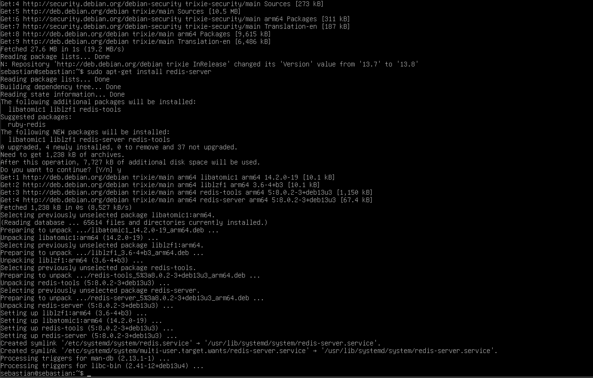
Tarkistin asennuksen jälkeen palvelun tilan:
sudo systemctl status redis-serversystemctl on Linuxin palveluiden hallintaan tarkoitettu työkalu. status näyttää palvelun tilan ja muita tietoja.
Tulosteessa näkyi active (running), mikä tarkoitti, että Redis-palvelin oli käynnissä. Lisäksi palvelun tila oli enabled, joten se käynnistyy automaattisesti järjestelmän käynnistyessä.
Redis-palvelun aktiivinen tila.
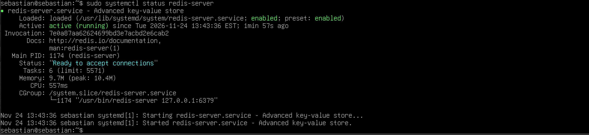
Testasin seuraavaksi Redis-palvelimen toimintaa:
redis-cli pingredis-cli on Redis-palvelimen komentorivityökalu. ping lähettää palvelimelle testipyynnön. Vastaukseksi sain PONG, mikä vahvisti, että Redis vastasi oikein.Redis-palvelimen PONG-vastaus.
Seuraavaksi automatisoin Redis-palvelimen asennuksen ja hallinnan Ansiblella.
Loin tehtävää varten oman projektihakemiston:
mkdir ~/h4-pizzafantasiacd ~/h4-pizzafantasiamkdir luo uuden hakemiston ja cd siirtyy kyseiseen hakemistoon.Projektin sisälle loin Redis-roolin hakemistorakenteen:
mkdir -p roles/redis/tasksmkdir -p roles/redis/handlersAnsible-rooli jakaa automaation pienempiin osiin. Tässä tapauksessa Redis-palvelimen asennus, asetukset ja palvelun hallinta sijoitettiin omaan rooliinsa.
Loin myös site.yml-tiedoston, joka määrittää suoritettavan playbookin:
---hosts: localhost
become: yes
roles:
Playbookin tärkeimmät asetukset:
site.yml-tiedoston sisältö.
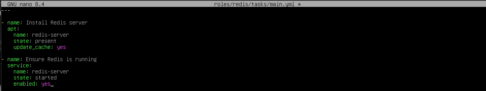
Redis-roolin tehtävät
Loin seuraavaksi tiedoston:
nano roles/redis/tasks/main.ymlTiedostoon määritin Redis-palvelimen asennuksen ja käynnistyksen:
apt:
name: redis-server
state: present
update_cache: yes
service:
name: redis-server
state: started
enabled: yes
Ensimmäisessä tehtävässä käytetään Ansiblen apt-moduulia. Se huolehtii Redis-paketin asentamisesta.
Toisessa tehtävässä käytetään service-moduulia Linux-palvelun hallintaan.
Redis-roolin main.yml-tiedosto.
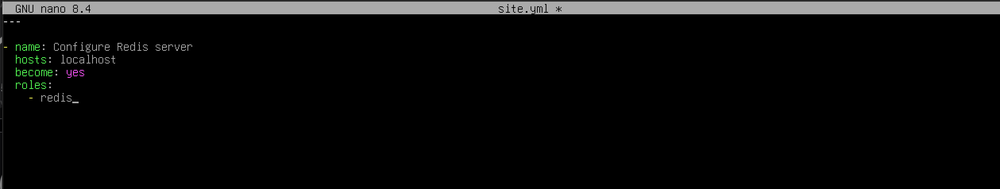
Redis-asetustiedoston muokkaaminen
Seuraavaksi tein oman Redis-asetustiedoston nimeltä redis.conf.
Tiedostossa muokkasin lokitustasoa:
loglevel warningRedis-palvelimen lokitustaso määrittää, kuinka paljon tietoa palvelin kirjoittaa lokiin. warning tarkoittaa, että lokiin tallennetaan varoitukset ja niitä vakavammat ilmoitukset.
Asetustiedoston avulla voidaan hallita Redis-palvelimen toimintaa keskitetysti.
redis.conf-tiedoston lokiasetus.
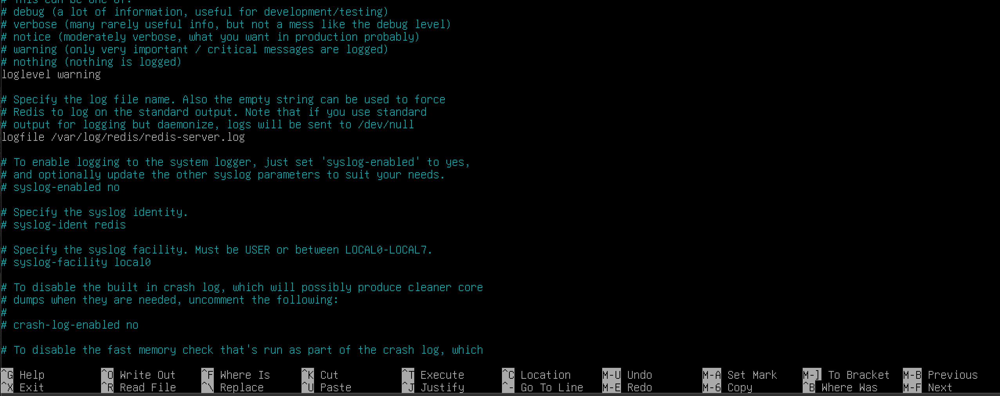
Lisäsin main.yml-tiedostoon tehtävän, joka kopioi asetustiedoston palvelimen oikeaan hakemistoon:
copy:
src: redis.conf
dest: /etc/redis/redis.conf
owner: root
group: redis
mode: '0640'
notify: Restart Redis
Tässä käytetään Ansiblen copy-moduulia.
Käyttöoikeudessa 0640 omistajalla on luku- ja kirjoitusoikeus, ryhmällä lukuoikeus ja muilla käyttäjillä ei ole oikeuksia.
Redis-asetustiedoston kopiointitehtävä.
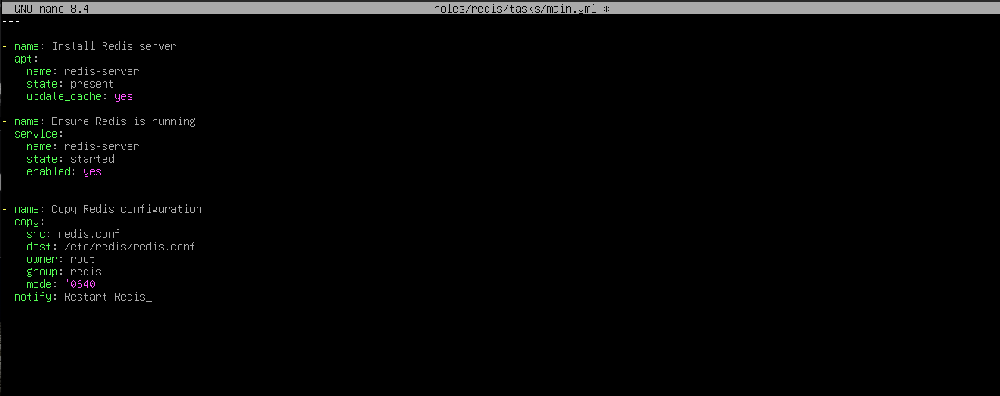
Handlerin luominen
Loin seuraavaksi handler-tiedoston:
nano roles/redis/handlers/main.ymlLisäsin tiedostoon seuraavan sisällön:
service:
name: redis-server
state: restarted
Handler on Ansible-tehtävä, joka suoritetaan vain silloin, kun jokin toinen tehtävä ilmoittaa muutoksesta notify-asetuksella.
Tässä tapauksessa Redis-palvelu käynnistetään uudelleen, jos sen asetustiedostoa muutetaan. Näin uudet asetukset tulevat käyttöön ilman tarpeettomia uudelleenkäynnistyksiä.
Handler-tiedoston sisältö.
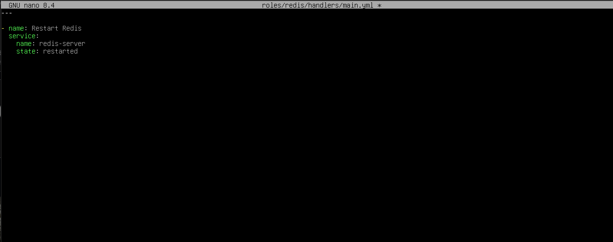
Kun tarvittavat tiedostot olivat valmiina, suoritin playbookin projektihakemistossa:
ansible-playbook -i hosts.ini site.yml --ask-become-passKomennon osat:
Ensimmäisellä suorituskerroilla Ansible suoritti Redis-palvelimen asennuksen, varmisti palvelun käynnissäolon ja kopioi asetustiedoston paikalleen.
Tulosteessa näkyi myös changed-merkintöjä. Tämä tarkoittaa, että Ansible teki järjestelmään muutoksia.
Suoritus päättyi onnistuneesti. Tuloksena oli failed=0, joten tehtävässä ei ollut virheitä.
Ansible-playbookin ensimmäinen onnistunut suoritus.
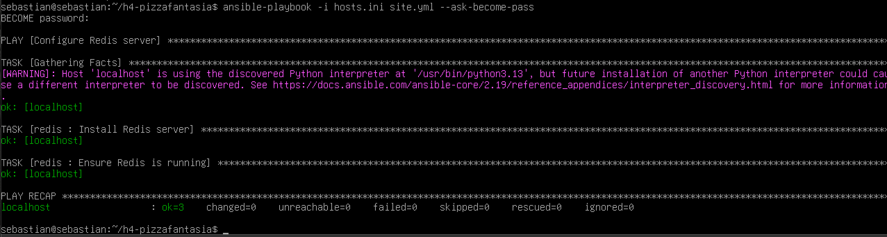
Playbookin suorittaminen uudelleen
Suoritin playbookin uudelleen samalla komennolla:
ansible-playbook -i hosts.ini site.yml --ask-become-passTällä kertaa tulosteessa näkyi, että tehtävät olivat jo kunnossa eikä tarpeettomia muutoksia tarvinnut tehdä.
Playbookin uudelleen suorittaminen ilman muutoksia.
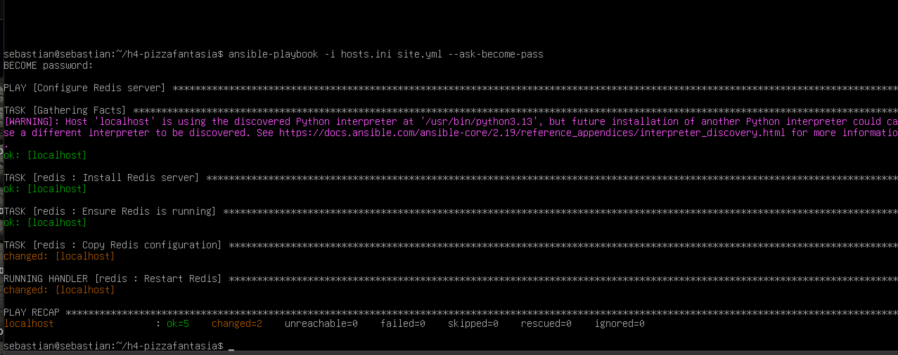
Asetuksen muuttamisen testaaminen
Testasin myös asetustiedoston muutoksen vaikutusta. Kun Redis-asetustiedosto kopioitiin uudelleen palvelimelle, Ansible tunnisti muutoksen ja suoritti Restart Redis -handlerin.
Tulosteessa näkyi:
Näin varmistin, että handler toimii oikein ja palvelu käynnistyy uudelleen asetusten muuttuessa.
Redis-asetuksen tarkistaminen
Tarkistin vielä Redis-palvelimen käyttämän lokitustason:
redis-cli CONFIG GET loglevelKomento hakee Redis-palvelimen asetuksista loglevel-arvon.
Vastauksessa näkyi:
1) "loglevel"2) "warning"Tämä vahvisti, että muokkaamani asetus oli käytössä Redis-palvelimessa.
Redis-palvelimen loglevel-asetuksen tarkistaminen.
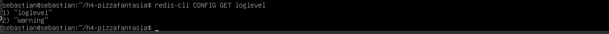
Aloitin poistamalla Redis-palvelimen Debian-virtuaalikoneelta:
sudo apt-get purge redis-serversudo suorittaa komennon ylläpitäjän oikeuksilla. apt-get purge poistaa Redis-palvelimen sekä siihen liittyvät asetustiedostot.Redis-palvelimen poistaminen purge-komennolla.
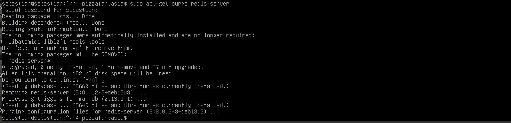
Poistamisen jälkeen suoritin Ansible-playbookin uudelleen:
ansible-playbook -i hosts.ini site.yml --ask-become-passAnsible kävi roolin tehtävät läpi järjestyksessä. Ensimmäisenä se tarkisti Redis-paketin asennuksen. Koska olin poistanut ohjelmiston, Ansible asensi sen uudelleen. Seuraavaksi Ansible varmisti palvelun käynnissäolon ja kopioi Redis-asetustiedoston takaisin oikeaan sijaintiin.
Jos asetustiedosto muuttui, Ansible suoritti myös Restart Redis -handlerin, jolloin palvelu käynnistettiin uudelleen.
Ansible-playbookin suorittaminen Redis-palvelimen poistamisen jälkeen ja sen palauttaminen.
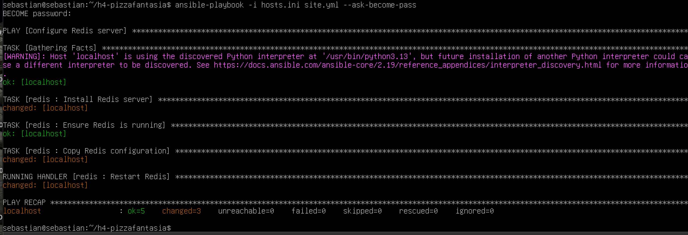
Viimeisessä vaiheessa testasin Ansible-automaation idempotenttisuutta.
Idempotenttisuus tarkoittaa sitä, että sama automaatiokomento voidaan suorittaa useita kertoja ilman, että järjestelmään tehdään tarpeettomia muutoksia. Ansible tarkistaa järjestelmän nykyisen tilan ja vertaa sitä playbookissa määriteltyyn tavoitetilaan.
Suoritin saman playbookin uudelleen:
ansible-playbook -i hosts.ini site.yml --ask-become-passTällä kertaa kaikki tehtävät olivat jo tavoitetilassa, joten Ansible ei joutunut tekemään muutoksia.
Suorituksen lopussa näkyi seuraava yhteenveto:
localhost : ok=4 changed=0 unreachable=0 failed=0Tuloksen merkitys:
ok=4 tarkoittaa, että neljä tehtävää suoritettiin onnistuneesti.
changed=0 tarkoittaa, ettei järjestelmään tehty muutoksia.
unreachable=0 tarkoittaa, että hallittavaan koneeseen saatiin yhteys.
failed=0 tarkoittaa, ettei tehtävissä ollut virheitä.
Playbookin suorittaminen uudelleen ja changed=0-tulos.
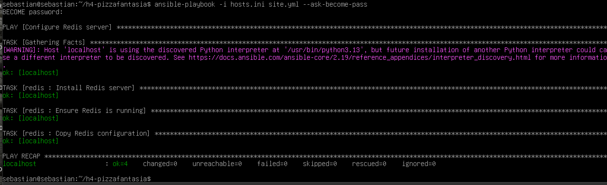
Karvinen, T. 2026. Palvelinten Hallinta – H4 Pizza Fantasia. https://terokarvinen.com/palvelinten-hallinta/
Karvinen, T. 2026. Hello Ansible. https://terokarvinen.com/palvelinten-hallinta/
Karvinen, T. 2025. Pkg-File-Service – Control Daemons with Salt. https://terokarvinen.com/2025/palvelinten-hallinta-ici001as3a-3012-2025p2/
Ansible Community Documentation. Ansible Documentation. https://docs.ansible.com/
Ansible Community Documentation. Handlers: Running Operations on Change. https://docs.ansible.com/projects/ansible/latest/playbook_guide/playbooks_handlers.html
Redis Documentation. Install Redis on Linux. https://redis.io/docs/latest/operate/oss_and_stack/install/install-redis/install-redis-on-linux/
Redis Documentation. Redis Configuration. https://redis.io/docs/latest/management/config/
Tekoälyä käytetty käsitteiden ja käskyjen avaamiseen.